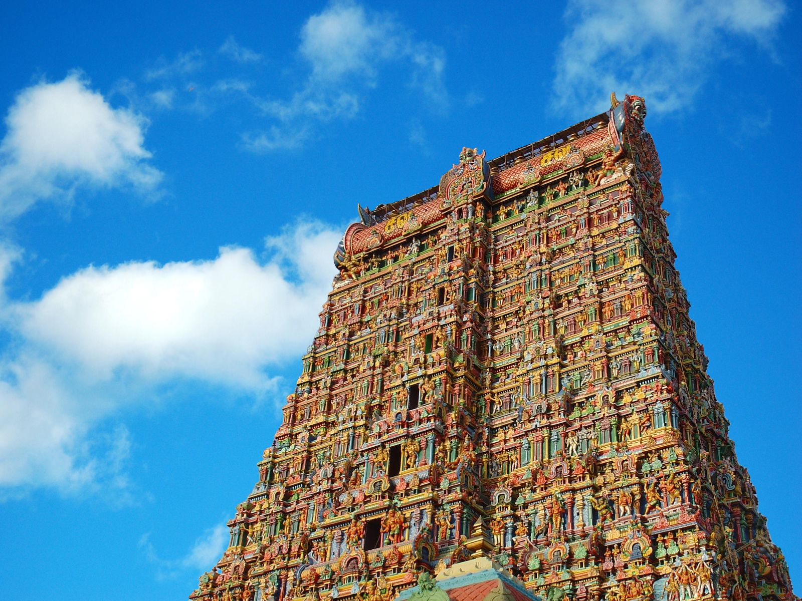
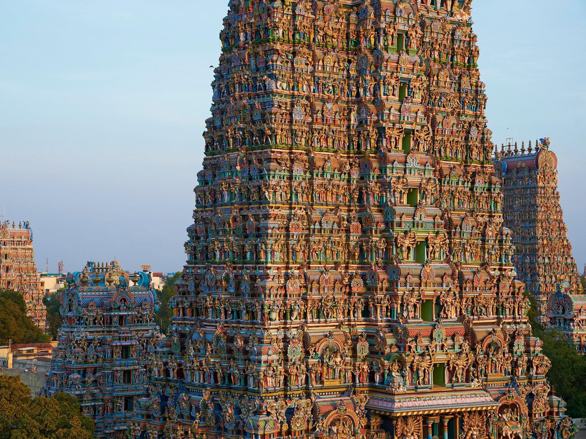
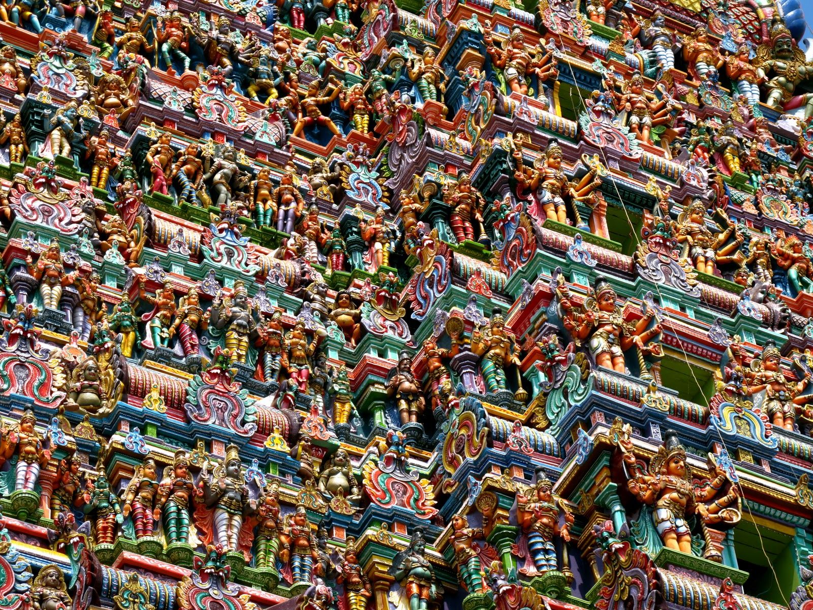
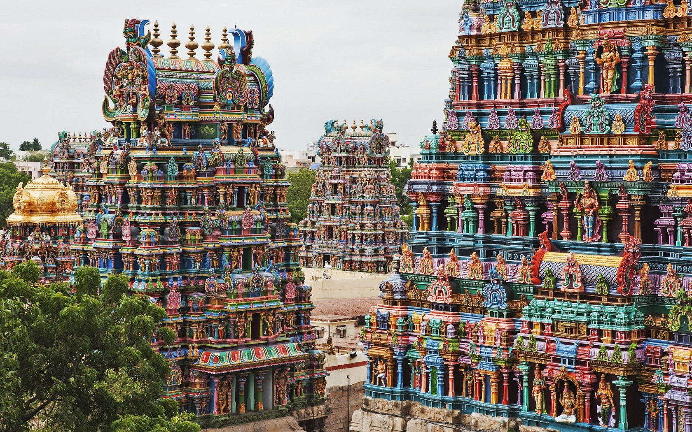

Meenakshi Temple, Tamil Nadu

This architectural wonder is situated in Madurai, Tamil Nadu and is dedicated to Goddess Parvati (also known as Meenakshi) and her husband Lord Shiva. Madurai is the second biggest city of India and is also one of the oldest cities of the world
A dip in the Golden Lotus tank, situated in the temple, is considered auspicious and is usually taken before visiting the main shrine of the God and Goddess. As per a legend, the pond was created by Lord Shiva and is even older than the temple.
The temple has a hall, which consists of 985 pillars; each pillar is intricately carved with distinct figurines. The 12th century colorful temple was among the thirty nominees of the ‘New Seven Wonders of the World’.



